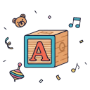

Profi textař po ruce
Textař napíše text ručně, nebo pečlivě přetvoří generovaný základ.
Vy dirigujete, textař ladí, technologie komponuje. Vznikne písnička od srdce, která vydá za tisíc slov.
Krátké zadání proměníme v osobní písničku. Lidský cit drží příběh, technologie pomáhá s hudbou.
Textař napíše text ručně, nebo pečlivě přetvoří generovaný základ.
Používáme licence nástrojů, díky kterým se kvalita blíží studiové nahrávce.
Pokud vám písnička nesedne, druhou verzi vytvoříme zdarma.
Brzy, ale ne okamžitě. Ruční část tvorby si žádá svůj čas.

Neprodáváme anonymní šablonu. Každé zadání čteme, hledáme osobní detail a ladíme slova tak, aby písnička patřila konkrétnímu člověku.
Popíšete, o čem má písnička být a v jakém stylu. Máte vlastní text? Sem s ním, rádi ho zhudebníme.
Hledáme správná slova. Upravujeme. Skládáme, tvoříme a mixujeme. Člověk a technologie pracují ruku v ruce.
Ozveme se hned, jak práci dokončíme. V e-mailu najdete odkaz na osobní stránku se stažením i přehráváním.
Překvapí, rozesmějí, rozpláčou. Od rockera po milovníka dechovky.
Narozeniny, výročí, úspěchy. Každá oslava si zaslouží svou píseň.

Hravé melodie a personalizované texty, které si děti zamilují.
Řekněte svým blízkým, co máte na srdci. Písnička vydá za tisíc slov.
Máte vlastní text? O hudbu, aranžmá a výslednou nahrávku se postaráme.
Promoční den, rozlučka, narození dítěte nebo oznámení svatby.
Dvě varianty, kdy písničku tvoříme za vás. A jedna lehčí cesta, kde si text napíšete s průvodcem sami.
Písnička na míru
Rychlá osobní písnička podle vašeho zadání s textařským dohledem.
Osobní spolupráce
Pro chvíle, kdy chcete víc péče, konzultaci a text laděný poctivěji do detailu.
Vyzkoušejte sami
Napište svou písničku s pomocí AI průvodce a koncept upravte podle sebe.
„Píseň předčila naše očekávání. Dojalo nás to do slz.“
„Skvělý text, krásná hudba. Přesně vystihli, co jsme chtěli.“
„Rychlé, milé a profesionální. Určitě doporučuji!“
„Textař nám pomohl doladit text, který jsme měli jen v náčrtu.“
Reference pochází od skutečných zákazníků. Pochází z Google profilu, Facebook recenzí i e-mailové komunikace.
Jednáme fér. Odpovídáme na otázky, které vás zajímají.
Víme a aktivity dalších tvůrců podporujeme. Přidanou hodnotou je práce textaře, který má cit, dokáže najít vhodná slova i rýmy.
Hotové písničky posíláme zpravidla do 24 hodin podle aktuální vytíženosti textařů a zvolené varianty.
Ano. Stačí vybrat primární styl a případně žánr blíže specifikovat. Uvést můžete i interprety, kteří se vám líbí.
Pokud vám první verze nesedne, připravíme druhou zdarma. Podle technických možností upravíme stávající, nebo vytvoříme novou.
Standardně dodáváme v MP3. Soubor pošleme přes odkaz na personalizovanou webovou stránku.
Napište nám pár slov o člověku, kterého chcete překvapit. Zbytek už doladíme spolu.
Začít objednávku